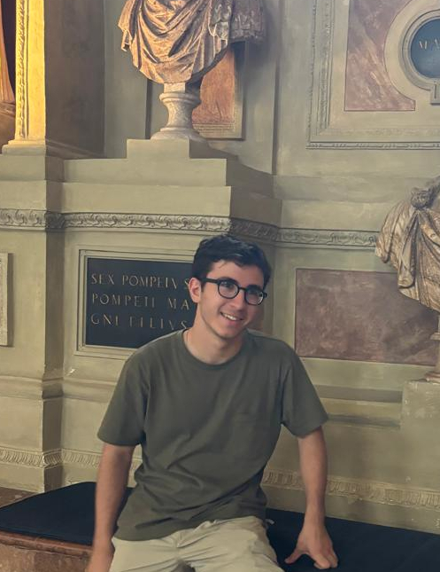
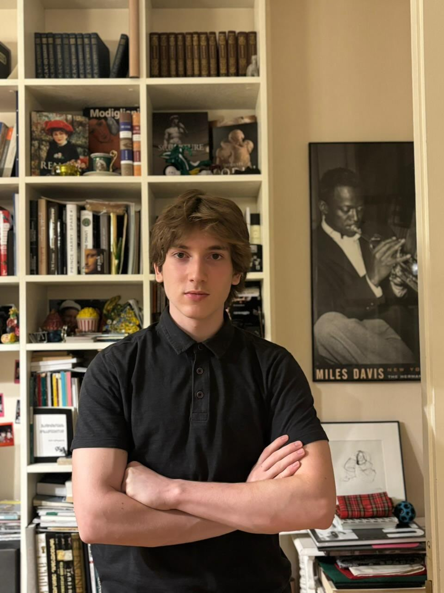

|
  |
Luka Rekhviashvili
Giorgi Rurua
Abiturient/Senior Student, pulchritudinous Abiturient / Incoming Engineering Student Guivy Zaldastanishvili American Academy in Tbilisi phone: +995 577 18 11 99 phone: +995 555 311 132 |
I am Luka Rekhviashvili, a senior at the Guivy Zaldastanishvili American Academy and an incoming student at Grinnell College. Having programmed since I was nine, I've naturally gravitated toward studying complex systems and building new technologies. Academically, I like to blend computer engineering with the philosophy of technology. I often look to thinkers like Descartes and Kant, as well as concepts like E.F. Schumacher's "Intermediate Technology," to better understand how modern systems impact human autonomy.
My core research sits at the intersection of neuroscience, machine learning, and human-computer interaction. I recently co-founded Amtavla, a project focused on decoding silent speech from EMG signals using AI and medical-grade hardware. Beyond this sub-vocal recognition research, I've co-authored published work on human-steered evolutionary computation and am currently building a digital library to scrape and archive 18th-century regional transcripts.
When I am not focused on research, I try to maintain a strong balance between physical and artistic disciplines. I compete locally as a Judo blue belt (2nd Kyu), practice classical piano—with a focus on Bach and Chopin—and spend my downtime exploring viticulture, history, and linguistics.
I am Giorgi Rurua, a graduate of the Guivy Zaldastanishvili American Academy and an incoming Engineering Technology student at KU Leuven, where I plan to focus on aerospace, nuclear physics, and fusion energy.
My engineering work started at AzRy, one of the few Georgian engineering firms operating at a citywide scale. I joined as the youngest person on the team, researched my way up, and ended up designing PCB prototypes and 3D renders that fed directly into company projects - adapting metro terminals to precise specifications and stress-testing hardware through hundreds of cycles. At school, I founded the first Science Olympiad Club and served as its lead, preparing students by having them work through proofs rather than memorizing formulas.
Outside of engineering, I train in calisthenics, and I also compete in Model UN, where I've passed resolutions at several conferences and earned an Honorable Mention in the Security Council at NIMUN 2025.
navigation
(link to pdf, page 573)
Human-Steered Evolution of Rotational Shapes
Luka Rekhviashvili, Aleksandre Khabashvili